Callback Graph
ReactFlow with ELK auto-layout, custom relay and proxy nodes and PNG export, over a table with bulk actions and sleep / jitter editing.
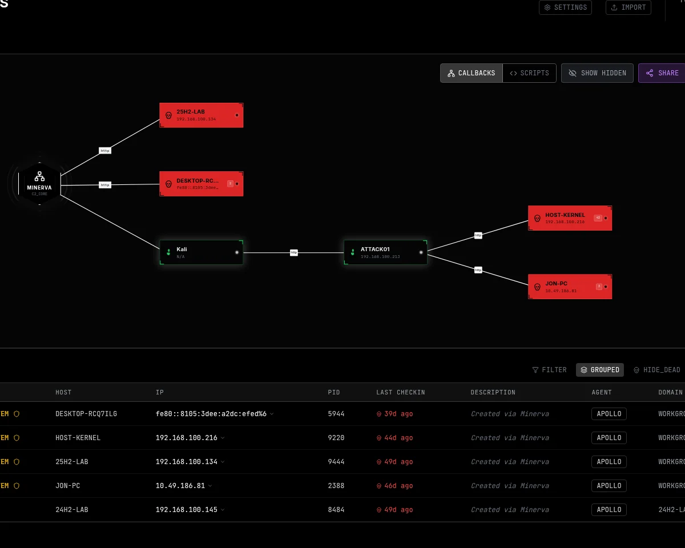
Next-generation Mythic C2 interface
Your operation, in full view.
Everything the dashboard counts, the 3D Cyber-Topology shows in place: which hosts you own, how the traffic actually reaches them, and what stands between you and the next hop.
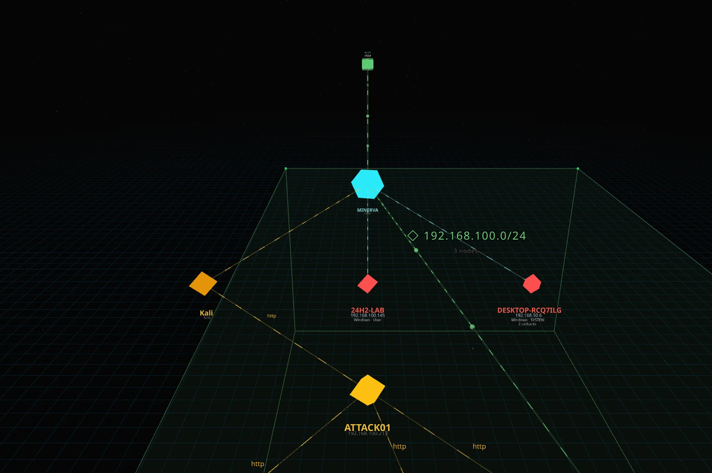
Multi-tab command tasking with Mimikatz parsing, process listings, file-browser overlays, inline tasking forms and drag-and-drop uploads, with task results streaming in live.
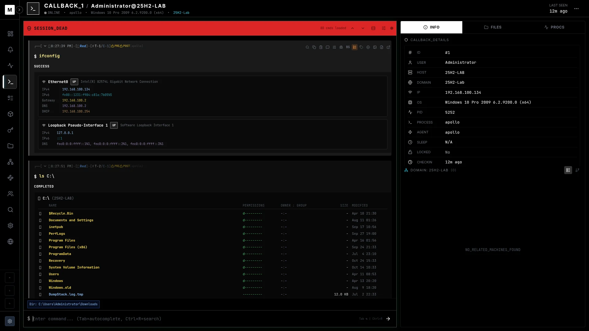
Designed from the ground up for operators who need a dense, low-friction operational console.
ReactFlow with ELK auto-layout, custom relay and proxy nodes and PNG export, over a table with bulk actions and sleep / jitter editing.

One-click recon, persistence, dumping and lateral workflows, defined in JSON and extensible.
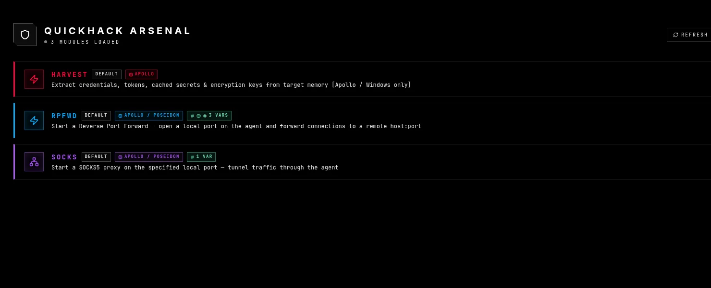
Every tab you have opened, so you jump between callbacks without losing context.
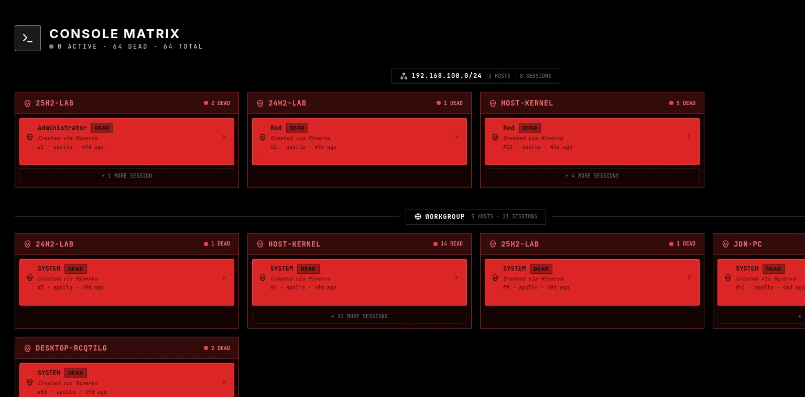
Search by account, realm, credential, comment or tag; each credential links back to its task.
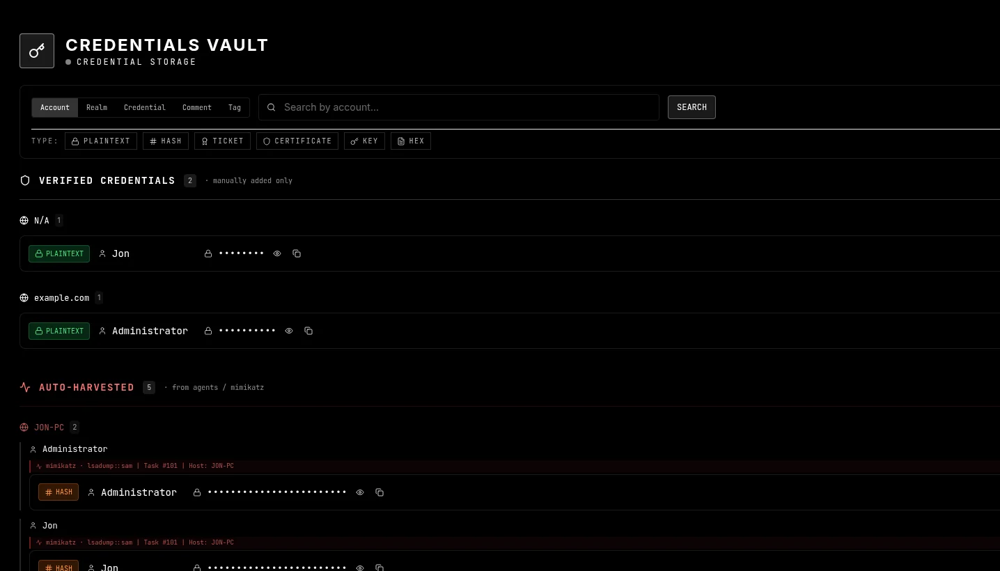
All 637 techniques. Filter by tasks, commands or tags and the cells light up with live coverage.
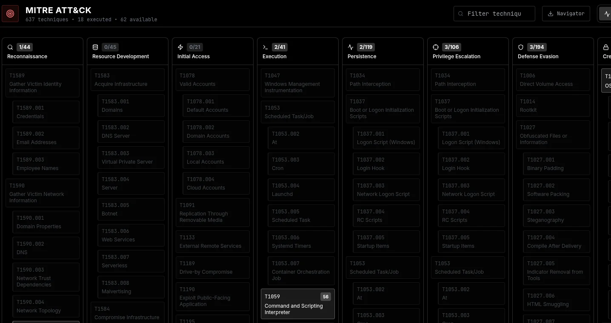
The whole app lives under /new/, beside Mythic's own UI. Pick a view to see its real screen.
Callbacks, payloads and C2 status at a glance, a T- / T-0 / T+ engagement timeline, and panels you split any way, kept per operator.
The flagship: the whole engagement as a live Three.js scene, subnets as volumes, C2 and P2P links drawn apart.
A live stream of new callbacks, alerts, custom and startup events, with the counter behind the sidebar's bell.
Each operation from active to complete, its operators, and a command blocklist of its own.
Per-operation OPSEC: blocked commands and role-based gates, enforced the moment a task is issued.
A ReactFlow graph of every active agent over a sortable table: bulk actions, sleep / jitter, groups and last check-in.
Every tab you have opened, so you move between callbacks without losing your place.
Tasking with structured output: Mimikatz parsing, process lists, file-browser overlays, results streaming in.
One task in depth: the host tree, a parameter inspector, the output viewer, and the previous and next task.
Every build with its C2 profiles and status, the wrapper flow, import and export, and rebuild from an existing payload.
A build wizard, OS → type → commands → C2 → build, that keeps every step so you can go back and adjust.
Every installed agent, wrapper, translator and service, with container status, build parameters and commands.
Every installed profile, from http and dns to discord and github, with versions, container files and start / stop.
SOCKS and RPORTFWD as a flow: the operator-side proxy, the C2 relay and the target endpoint, with ports and status.
Downloads, uploads, screenshots and eventing files in one place, with the target's file-browser tree.
Search by account, realm, credential, comment or tag; each one links back to the task that found it.
Indicators and artifacts, each tied to its task and its host.
One search across tasks, files, credentials, callbacks and artifacts, scoped to the current operation.
All 637 techniques. Filter by tasks, commands or tags and the executed cells light up.
One-click recon, persistence, dumping and lateral workflows, chained across the callbacks you pick.
MSF-RPC in four tabs: the dashboard, launch attack, live operations and a full task history.
A visual builder for Mythic eventing: event groups, keyword triggers, conditional steps and a live stream of matches.
Create, edit and deactivate operators, reset passwords, and grant or revoke admin.
Reports built from the operation's own data, with analytics, filters and export.
An editable library of browser scripts, scoped per payload type, in sortable, virtualized tables.
Tags that organize and filter every kind of record in the operation.
Every preference in one panel: display, timestamps, tasking modes, audio, the theme palette and sidebar order.
Browse modules, launch with a target and payload, manage sessions, jobs and routes, and keep every run in a persistent history with full output.
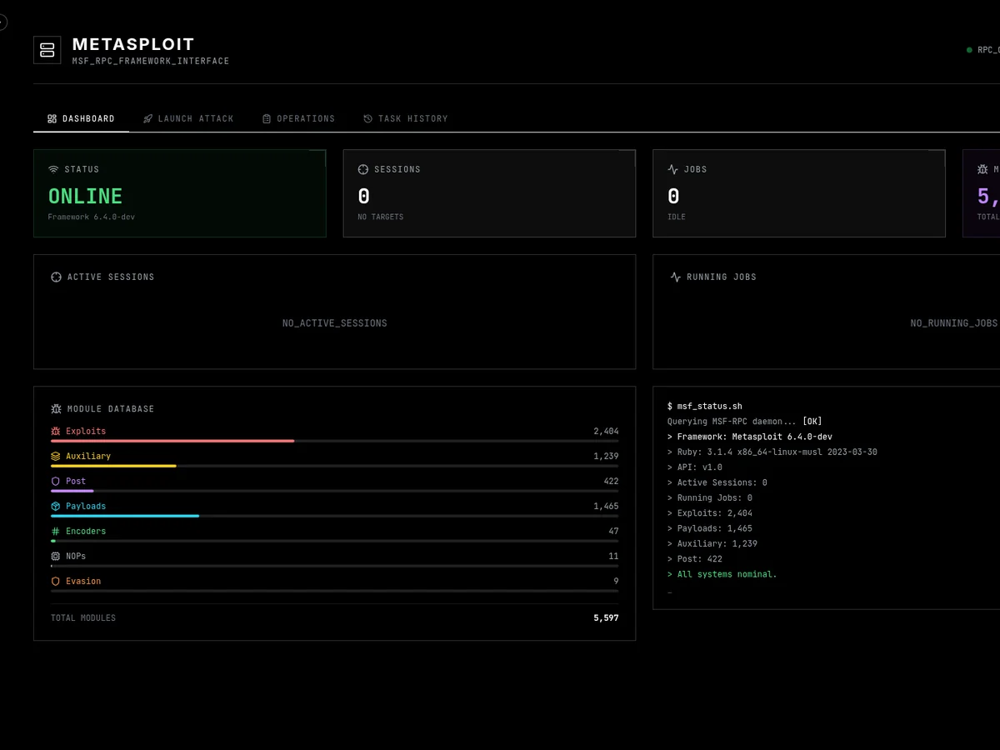
The full chain from the operator-side proxy through the C2 server relay to the target endpoint, with tunnel status and port mappings.
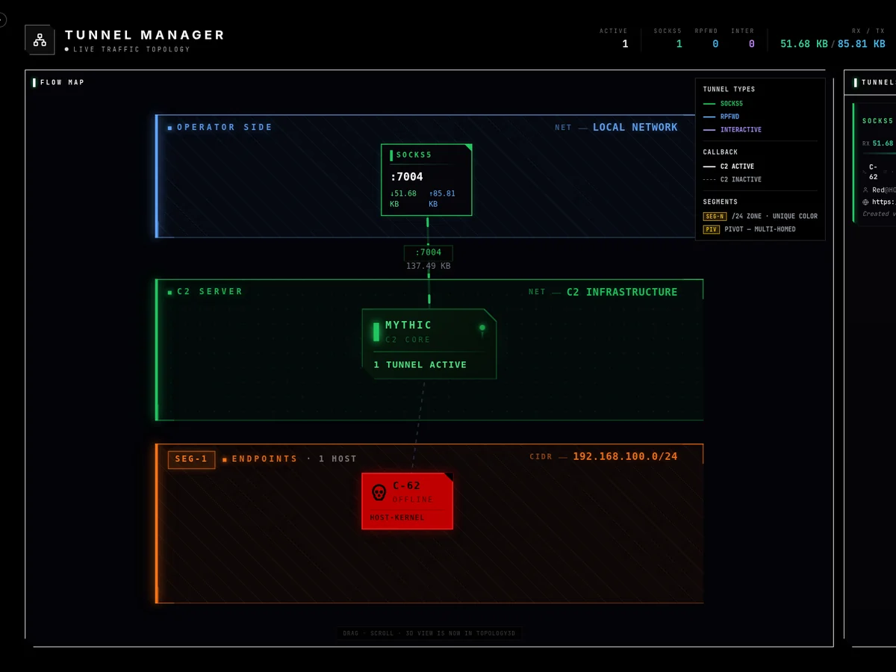
A step-by-step build wizard (OS → type → commands → C2 → build), the wrapper flow, import and export, and rebuild from an existing payload.
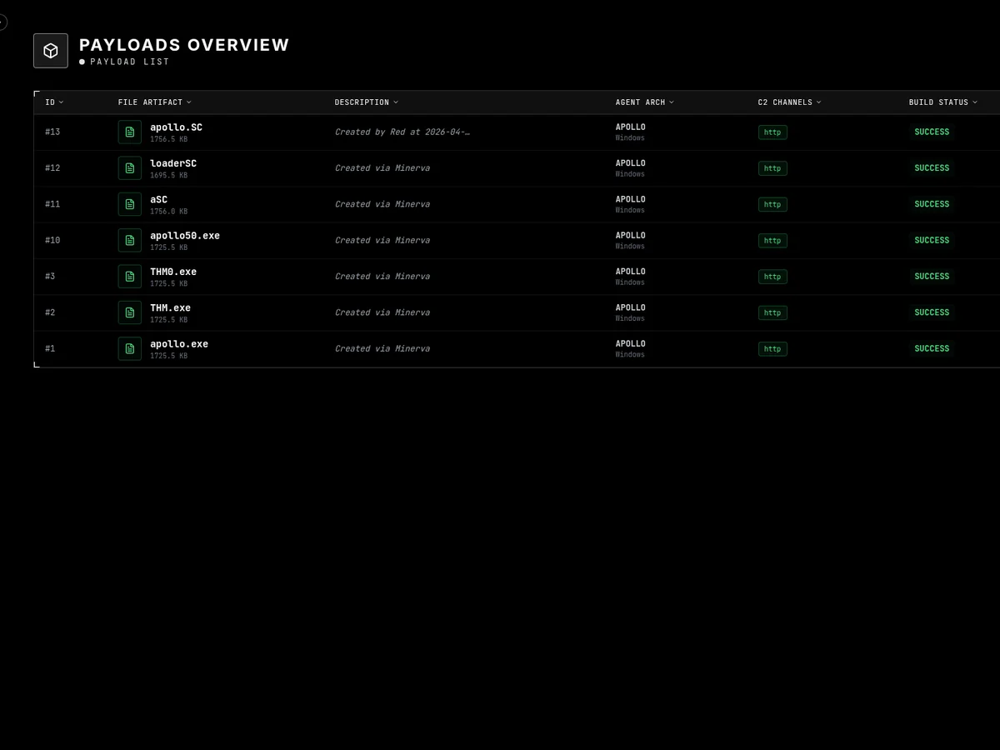
Battle Mode re-tunes density, animation speed and ambient sound to the phase you are in. Switch it from the sidebar's combat and recon icons; the choice is kept.
NORMAL
Full chrome and the whole animation budget.
RECON
Non-critical chrome dims so the data stays legible.
COMBAT
Twice the animation speed, the accent turned alarm red, the ambient sound up.
An engagement timeline from T- to T+, and panels you split either way without limit, kept per operator.
Reorder or hide sidebar items per operator, with Mythic's Jupyter and Hasura console one click away.
Dark and light themes on CSS variables, your own accent and background image, and output colours per component.
A music library in IndexedDB that plays on across reloads, and a sound for callbacks, tunnels, auth alerts and errors, each with its own switch.
One Nginx container terminates TLS on 443 and routes by path: the app to minerva-dev, the API to Mythic over host.docker.internal, MSF-RPC to Metasploit when you run it. Mythic's own UI is left as it was.
Operator
Browser
https://<host>/new/
Single entry · TLS
minervaNginx :443
Self-signed on first run
App
minerva-dev:3000
/new//ws
API
Mythichost.docker.internal
/graphql//auth/refresh/invite/direct/
Optional
minerva_msf:55553
/msf-rpc/
Nothing is copied into MythicReactUI or baked into the mythic_react container, so Mythic's own UI keeps working beside it.
Data arrives as GraphQL subscriptions over WebSocket, and custom graph nodes reach every operator every 5 s through Hasura.
Buffers sized for 16k JWTs and 50 MB uploads, and a 24-hour read timeout on the GraphQL socket.
Minerva runs as its own Docker stack, fully separate from Mythic. You need Docker with Compose, a Mythic instance this host can reach, and port 443.
Get Minerva from GitHub.
$ git clone https://github.com/
aifred0729-TW/Minerva.git
It sets Mythic's .env, applies the backend patches, configures Hasura and starts Minerva on 443. Every step is idempotent.
$ cd Minerva
$ ./scripts/minerva_install.sh
The first start compiles the app in about 1–2 minutes. Then log in with your Mythic credentials.
→ https://<your-host>/new/login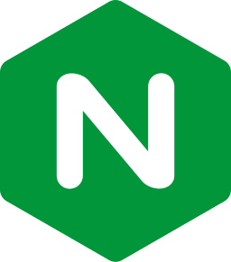
NginxFrom the README's deployment, Metasploit, desktop and troubleshooting sections.
No. It runs as a standalone stack alongside Mythic, a separate front-end to MythicReactUI rather than a swap-in for it.
The README lists Mythic 0.3.106 as compatible with Minerva 2.2.1.
The backend only: Mythic's .env, Go patches to mythic_server, agent patches and the Hasura agentstorage table. All idempotent and safe to re-run.
Yes. Set MYTHIC_ADDRESS, for example https://10.0.0.5:7443, and run docker compose up -d.
Mythic's .env still binds to loopback. Set both *_BIND_LOCALHOST_ONLY keys to "false" and run ./mythic-cli start, or just run ./scripts/minerva_install.sh fix.
That is expected: Minerva self-signs its TLS certificate on first run. Trust it or accept the warning.
No. MSF-RPC is an optional container. minerva_install.sh msf-start brings it up and writes a generated password to a git-ignored .env.msf.
Yes. The Windows and macOS builds wrap the same React bundle in Electron, point at Mythic from a connect window, and keep outbound connections closed by default.
Dual-licensed: AGPL-3.0, or a commercial license for closed-source use. Use it only against systems you are authorized to test.